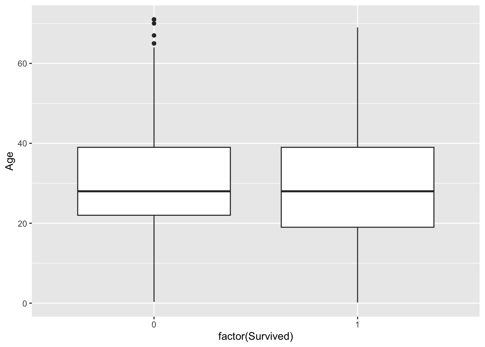
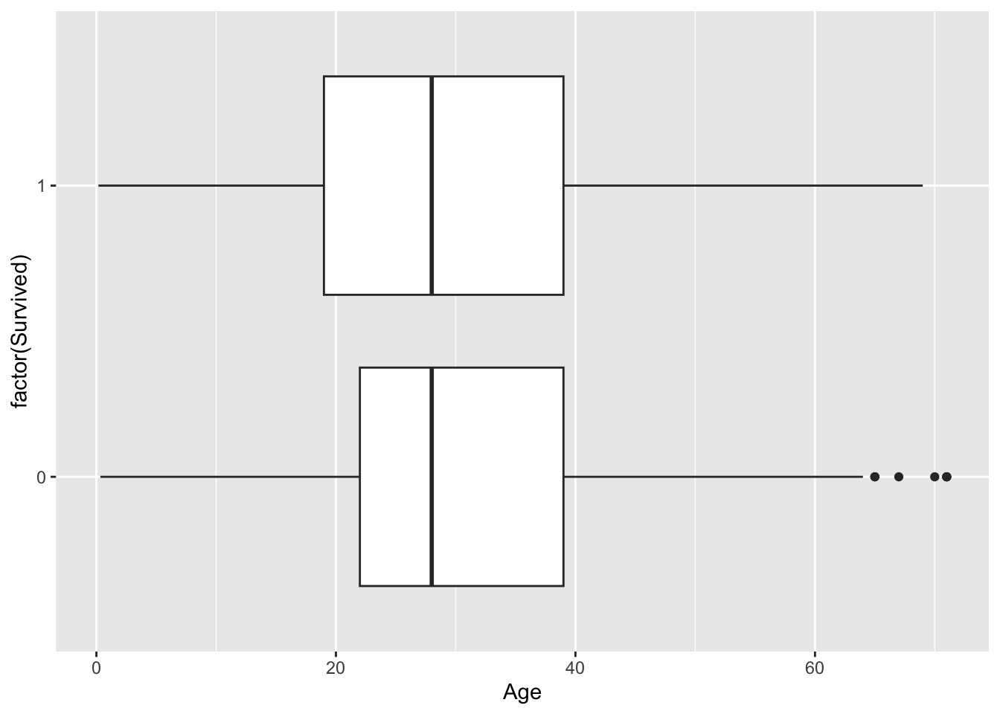
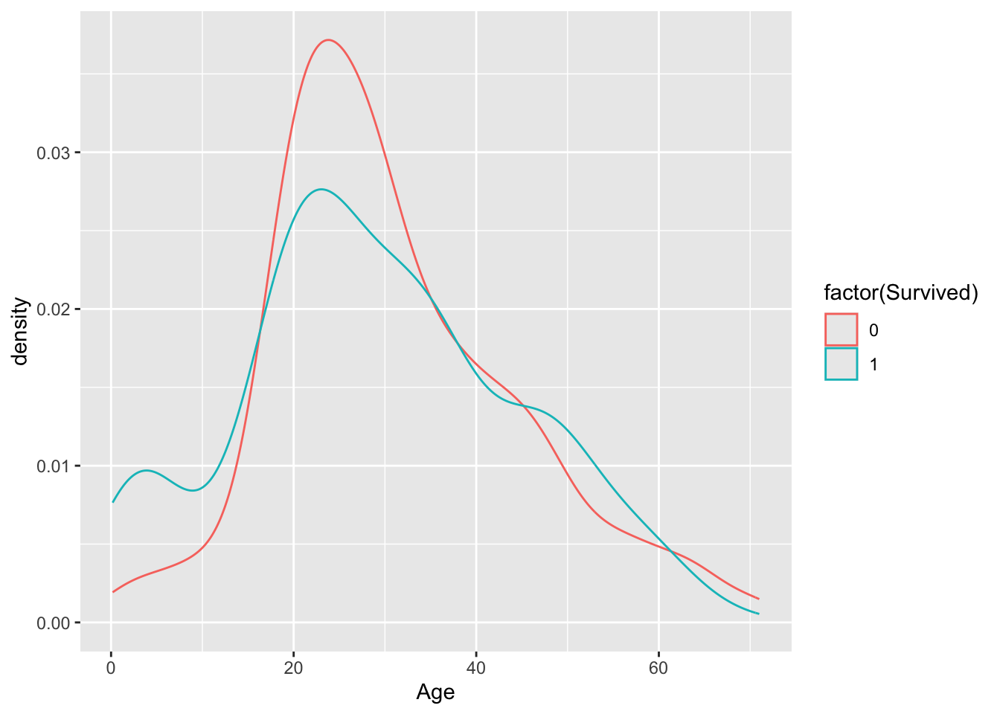
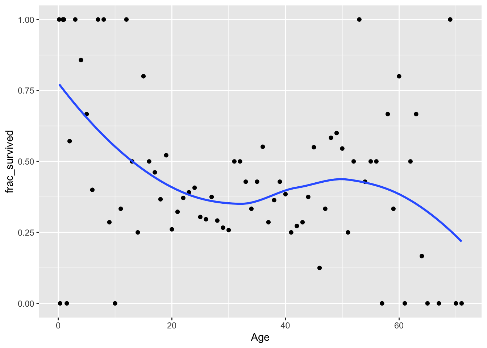
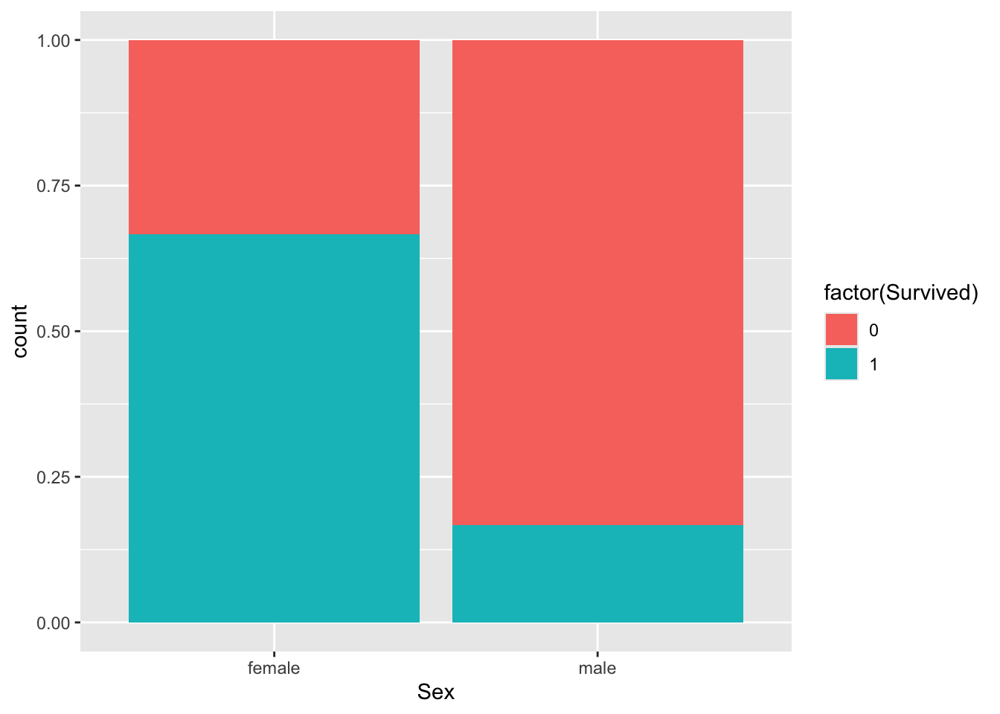
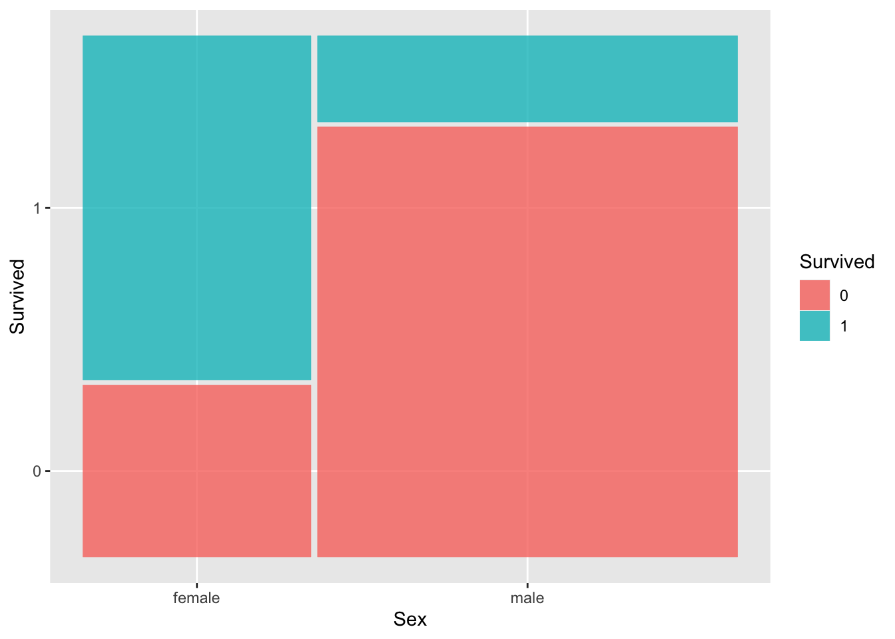

Context: The Titanic was a British passenger ship that famously sank in 1912 after hitting an iceberg in the North Atlantic Ocean. Approximately 2200 passengers were on board the Titanic, and it’s estimated that 1500 of them did not survive the crash. Historians have worked diligently to collect data on the passengers that were aboard the Titanic.
We have data for 1313 passengers, where the following information is available for each passenger:
Name: name
PClass: ticket class (1st, 2nd, 3rd)
Age: age (years)
Sex: binary sex (female, male)
Survived: indicator that the passenger survived (1 = survived, 0 = died)
Our question of interest is: how do different factors relate to survival?
In the Console, run install.packages("ggmosaic") to install the ggmosaic package that we’ll be using to make a specialized type of plot.
── Column specification ────────────────────────────────────────────────────────
Delimiter: ","
chr (3): Name, PClass, Sex
dbl (2): Age, Survived
ℹ Use `spec()` to retrieve the full column specification for this data.
ℹ Specify the column types or set `show_col_types = FALSE` to quiet this message.
Exercise 1: Exploring age
Did younger passengers tend to have higher survival rates than older passengers?
Visualizing the relationship between a binary response and a quantitative predictor can be tricky. We will take a few approaches here.
Create a boxplot where one box corresponds to the age distribution of survivors and the second to that of non-survivors.
Create density plots with separate colors for the survivors and non-survivors.
The remainder of the code below creates a plot of the fraction who survived at each age. (Since we have a large data set and multiple (though sometimes not many) observations at most ages, we can manually calculate the survival fraction.
After inspecting the plots, summarize what you learn.
# Create a boxplot# Note that you'll need to force R to view Survived as a binary categorical variable by using x = factor(Survived) instead of just x = Survived in the aes() part of your plot# Create a density plot (you'll need to use factor(Survived) again)# Use the code below to create a plot of the fraction who survived at each agetitanic_summ <- titanic %>%group_by(Age) %>%summarize(frac_survived =mean(Survived))ggplot(titanic_summ, aes(x = Age, y = frac_survived)) +geom_point() +geom_smooth(se =FALSE)
Exercise 2: Exploring sex and ticket class
Were males or females more likely to survive? Did 1st class passengers tend to survive more than 2nd and 3rd class passengers?
The code below creates plots that allow us to explore how Sex and PClass relate to survival. The first two plots are standard bar plots that use color to indicate what fraction of each group survived. The last two plots are mosaic plots that are much like the standard bar plots, but the width of the bars reflects the distribution of the x-axis variable. (The widest bar is the most prevalent category.)
Summarize what you learn about the relationship between sex, ticket class, and survival.
# Standard bar plotsggplot(titanic, aes(x = Sex, fill =factor(Survived))) +geom_bar(position ="fill")ggplot(titanic, aes(x = PClass, fill =factor(Survived))) +geom_bar(position ="fill")# Mosaic plotsggplot(data = titanic %>%mutate(Survived =as.factor(Survived))) +geom_mosaic(aes(x =product(Sex), fill = Survived))ggplot(data = titanic %>%mutate(Survived =as.factor(Survived))) +geom_mosaic(aes(x =product(PClass), fill = Survived))
Exercise 3: Linear regression model
For now we will focus on exploring the relationship between (ticket) class and survival.
Let’s tabulate survival across classes. We can tabulate across two variables by providing both variables to count():
titanic %>%count(PClass, Survived)
Use the count() output to fill in the following contingency table:
Class
Died
Survived
Total
1st Class
___
___
___
2nd Class
___
___
___
3rd Class
___
___
___
Total
___
___
___
Using your table, estimate the following:
the probability of surviving among 1st class passengers
the probability of surviving among 2nd class passengers
the probability of surviving among 3rd class passengers
the difference in the probability of surviving, comparing 2nd class passengers to 1st class passengers (i.e., how much lower is the probability of 2nd class passengers as compared to 1st class passengers?)
the difference in the probability of surviving, comparing 3rd class passengers to 1st class passengers (i.e., how much lower is the probability of 3rd class passengers as compared to 1st class passengers?)
After fitting the linear regression model below, write out the model formula using correct notation. Explain carefully what it means to talk about the expected/average value of a binary variable.
lin_mod <-lm(Survived ~ PClass, data = titanic)summary(lin_mod)
Write an interpretation of each of the coefficients in your linear regression model. How do your coefficient estimates compare to your answers in part b?
Exercise 4: Logistic regression model
Refer back to your contingency table from Exercise 3a. Using your table, estimate the following:
the odds of surviving among 1st class passengers
the odds of surviving among 2nd class passengers
the odds of surviving among 3rd class passengers
the ratio of the odds of surviving, comparing 2nd class passengers to 1st class passengers (i.e., how many times higher/lower is the odds of survival among 2nd class passengers as compared to 1st class passengers?)
the ratio of the odds of surviving, comparing 3rd class passengers to 1st class passengers
After fitting the logistic regression model below, write out the model formula using correct notation.
log_mod <-glm(Survived ~ PClass, data = titanic, family ="binomial")coef(summary(log_mod))
Write an interpretation of each of the exponentiated coefficients in your logistic regression model. Think carefully about what we are modeling when we fit a logistic regression model. How do these exponentiated coefficient estimates compare to your answers in part a?
Exercise 5: Linear vs. logistic modeling
To highlight a key difference between linear vs. logistic modeling, consider the following linear and logistic regression models of survival with sex and age as predictors in addition to ticket class.
lin_mod2 <-lm(Survived ~ PClass + Sex + Age, data = titanic)coef(summary(lin_mod2))log_mod2 <-glm(Survived ~ PClass + Sex + Age, data = titanic, family ="binomial")coef(summary(log_mod2))
Use the linear regression model to predict the probability of survival for Rose (a 17 year old female in 1st class) and Jack (a 20 year old male in 3rd class). Show your work.
Now use the logistic regression model to predict the survival probability for Rose and Jack. Show your work. (Hint: use the logistic regression model to obtain the predicted log odds, exponentiate to get the odds, and then convert to probability.)
Comment on differences that you notice in the predictions from parts a and b.
Reflection
What binary outcomes might be relevant in your project? What predictor(s) could be relevant in a logistic regression model for that outcome?
Response: Put your response here.
Render your work
Click the “Render” button in the menu bar for this pane (blue arrow pointing right). This will create an HTML file containing all of the directions, code, and responses from this activity. A preview of the HTML will appear in the browser.
Scroll through and inspect the document to check that your work translated to the HTML format correctly.
Close the browser tab.
Go to the “Background Jobs” pane in RStudio and click the Stop button to end the rendering process.
Navigate to your “Activities” subfolder within your “STAT155” folder and locate the HTML file. You can open it again in your browser to double check.
Solutions
Exercise 1: Exploring age
The boxplot doesn’t clearly indicate a difference in the age distributions across survivors and non-survivors, but we do notice from the density plot that there is a greater density of younger passengers among the survivors. We also see from the last plot that younger passengers tend to have a higher survival chance.
# Create a boxplotggplot(titanic, aes(x =factor(Survived), y = Age)) +geom_boxplot()
Warning: Removed 557 rows containing non-finite outside the scale range
(`stat_boxplot()`).

# Can flip the boxplot on its side tooggplot(titanic, aes(y =factor(Survived), x = Age)) +geom_boxplot()
Warning: Removed 557 rows containing non-finite outside the scale range
(`stat_boxplot()`).

# Create a density plotggplot(titanic, aes(x = Age, color =factor(Survived))) +geom_density()
Warning: Removed 557 rows containing non-finite outside the scale range
(`stat_density()`).

# Use the code below to create a plot of the fraction who survived at each agetitanic_summ <- titanic %>%group_by(Age) %>%summarize(frac_survived =mean(Survived))ggplot(titanic_summ, aes(x = Age, y = frac_survived)) +geom_point() +geom_smooth(se =FALSE)
`geom_smooth()` using method = 'loess' and formula = 'y ~ x'
Warning: Removed 1 row containing non-finite outside the scale range
(`stat_smooth()`).
Warning: Removed 1 row containing missing values or values outside the scale range
(`geom_point()`).

Exercise 2: Exploring sex and ticket class
Females were more likely to survive than males.
1st class was most likely to survive, followed by 2nd then 3rd class.
# Standard bar plotsggplot(titanic, aes(x = Sex, fill =factor(Survived))) +geom_bar(position ="fill")

ggplot(titanic, aes(x = PClass, fill =factor(Survived))) +geom_bar(position ="fill")
Warning: The `scale_name` argument of `continuous_scale()` is deprecated as of ggplot2
3.5.0.
Warning: The `trans` argument of `continuous_scale()` is deprecated as of ggplot2 3.5.0.
ℹ Please use the `transform` argument instead.
Warning: `unite_()` was deprecated in tidyr 1.2.0.
ℹ Please use `unite()` instead.
ℹ The deprecated feature was likely used in the ggmosaic package.
Please report the issue at <https://github.com/haleyjeppson/ggmosaic>.

ggplot(data = titanic %>%mutate(Survived =as.factor(Survived))) +geom_mosaic(aes(x =product(PClass), fill = Survived))
the probability of surviving among 1st class passengers: 193/322 = 0.599
the probability of surviving among 2nd class passengers: 119/279 = 0.427
the probability of surviving among 3rd class passengers: 138/711 = 0.194
the difference in the probability of surviving, comparing 2nd class passengers to 1st class passengers (i.e., how much lower is the probability of 2nd class passengers as compared to 1st class passengers?): 119/279 - 193/322 = -0.173
the difference in the probability of surviving, comparing 3rd class passengers to 1st class passengers (i.e., how much lower is the probability of 3rd class passengers as compared to 1st class passengers?): 138/711 - 193/322 = -0.405
This model can be written as: \(E[Survived | PClass] = \beta_0 + \beta_1 PClass2nd + \beta_2 PClass3rd\).
In the context of a binary variable, the expected value/average is the same as the probability that the variable equals one. To see an example of this, calculate the average of this list of 0’s and 1’s: (0,0,1,1,0,1,0,1). Now calculate the proportion of 1’s. What do you notice?
This means that we can also write this model as follows: \(P[Survived = 1 | PClass] = \beta_0 + \beta_1 PClass2nd + \beta_2 PClass3rd\)
lin_mod <-lm(Survived ~ PClass, data = titanic)summary(lin_mod)
Call:
lm(formula = Survived ~ PClass, data = titanic)
Residuals:
Min 1Q Median 3Q Max
-0.5994 -0.1941 -0.1941 0.4006 0.8059
Coefficients:
Estimate Std. Error t value Pr(>|t|)
(Intercept) 0.59938 0.02468 24.284 < 2e-16 ***
PClass2nd -0.17286 0.03623 -4.772 2.03e-06 ***
PClass3rd -0.40529 0.02975 -13.623 < 2e-16 ***
---
Signif. codes: 0 '***' 0.001 '**' 0.01 '*' 0.05 '.' 0.1 ' ' 1
Residual standard error: 0.4429 on 1309 degrees of freedom
(1 observation deleted due to missingness)
Multiple R-squared: 0.1315, Adjusted R-squared: 0.1302
F-statistic: 99.09 on 2 and 1309 DF, p-value: < 2.2e-16
The coefficient estimates are the differences in probability from part b!
(Intercept): the estimated probability of survival for passengers in 1st class is 0.599 (59.9%)
PClass2nd: the difference in the estimated probability of survival comparing passengers in 1st class to passengers in 2nd class is 0.173 (17.3%), where passengers in 1st class have the higher estimated survival probability
OR… comparing passengers in 1st class to passengers in 2nd class, the difference in the proportion of passengers that survived is 0.173 (17.3%), with 1st class having a higher proportion of passengers that survived
OR… the probability of survival is 17.3% lower among passengers in 2nd class than it is among passengers in 1st class
PClass3rd: the difference in the estimated probability of survival comparing passengers in 1st class to passengers in 3rd class is 0.405 (40.5%), where passengers in 1st class have the higher estimated survival probability
Exercise 4: Logistic regression model
the odds of surviving among 1st class passengers: 193/129 = 1.496
the odds of surviving among 2nd class passengers: 119/160 = 0.744
the odds of surviving among 3rd class passengers: 138/573 = 0.241
the ratio of the odds of surviving, comparing 2nd class passengers to 1st class passengers (i.e., how many times higher/lower is the odds of survival among 2nd class passengers as compared to 1st class passengers?): (119/160)/(193/129) = 0.497
the ratio of the odds of surviving, comparing 3rd class passengers to 1st class passengers: (138/573)/(193/129) = 0.161
# Calculations for exponentiating coefficientsexp(0.4028778)
[1] 1.496124
exp(-0.6989281)
[1] 0.4971179
exp(-1.8265098)
[1] 0.1609744
These exponentiated coefficient estimates compare to your the odds and odds ratios in part a!
exp(Intercept): the estimated odds of survival among passengers in first class is 1.496 (i.e., passengers in first class are 1.496 times more likely to survive than they are to die)
exp(PClass2nd): we estimate that the odds of survival for passengers in 2nd class are only 0.50 times as high as the odds of survival among passengers in 1st class (i.e., the odds of survival are 2 times higher among passengers in 1st class than they are among passengers in 2nd class)
exp(PClass3rd): we estimate that the odds of survival for passengers in 3rd class are only 0.16 times as high as the odds of survival among passengers in 1st class (i.e., the odds of survival are 1/0.16 = 6.21 times higher among passengers in 1st class than they are among passengers in 3rd class)
Exercise 5: Linear vs. logistic modeling
To highlight a key difference between linear vs. logistic modeling, consider the following linear and logistic regression models of survival with sex and age as predictors in addition to ticket class.
lin_mod2 <-lm(Survived ~ PClass + Sex + Age, data = titanic)coef(summary(lin_mod2))
## (using predict)predict(log_mod2, newdata =data.frame(PClass ="3rd", Sex ="male", Age =20), type ="response")
1
0.101867
Our linear model predicted that Rose’s probability of survival was over 100% (which doesn’t make sense). The predictions for Jack are fairly similar: 10.2% based on our logistic model and 11.6% based on our linear model.